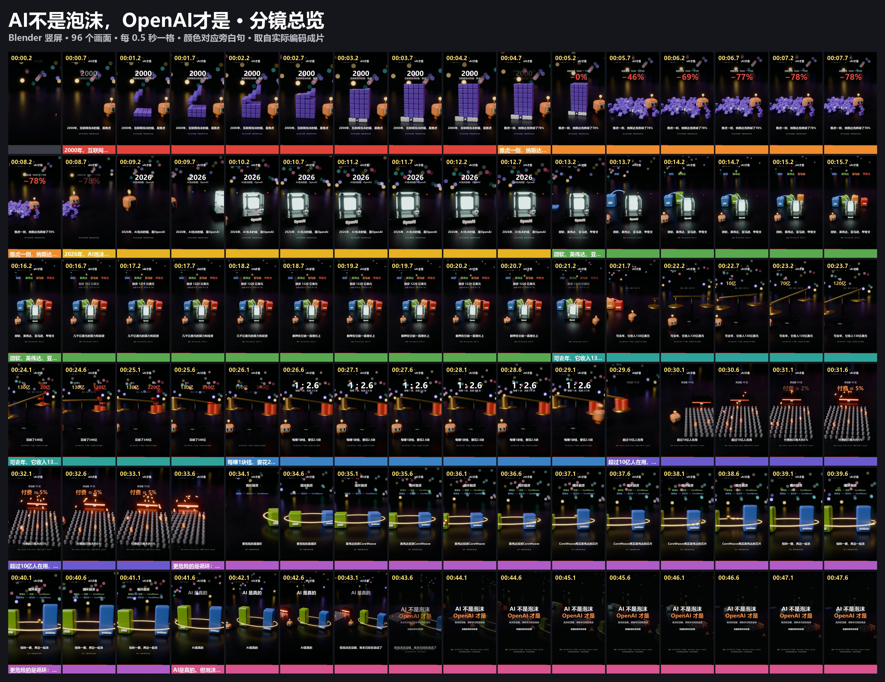
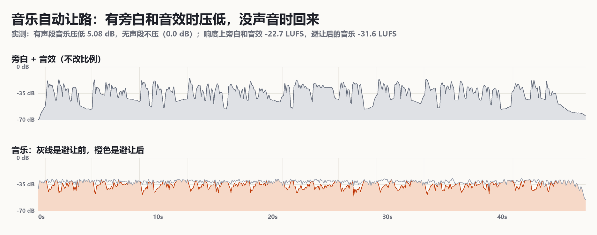

AI不是泡沫，OpenAI才是
47.81 秒，Blender 竖屏。这里是有声预览，默认暂停，点了才响。1080×1920 成片、SRT。观点改编自凯撒的复利实验室，数字按一手报道核对过，不构成投资建议。
用户 2026-11-02 说：“A「低频悬疑」配乐版我觉得 OK”，“认可范围是这次配乐效果”。
"Crypto" Kevin MacLeod (incompetech.com) Licensed under Creative Commons: By Attribution 4.0 https://creativecommons.org/licenses/by/4.0/ Music trimmed, loudness-normalized, faded and ducked beneath narration and sound effects.

